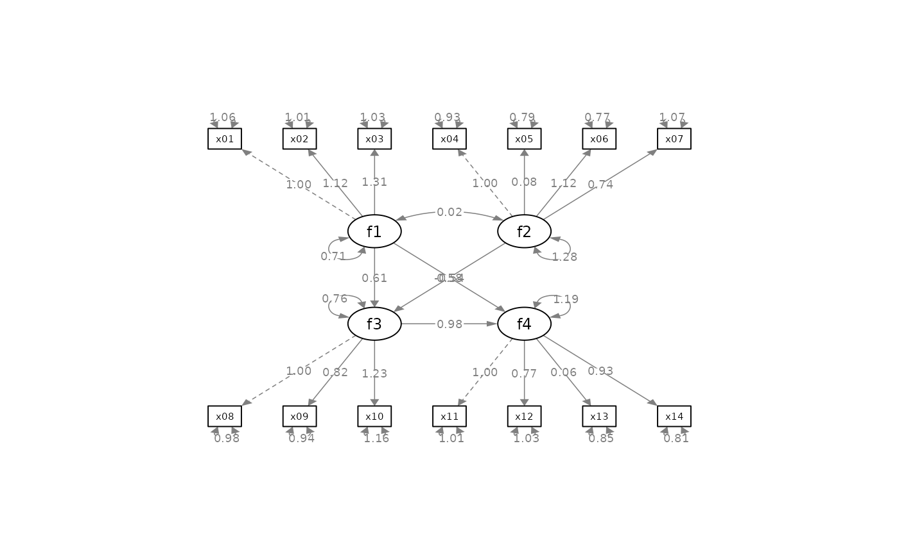

Configure the layout of factors of an SEM graph by semPlot::semPaths
Source:R/set_sem_layout.R
set_sem_layout.RdConfigure the layout of factors and adjust other aspects of an SEM graph by semPlot::semPaths.
Usage
set_sem_layout(
semPaths_plot,
indicator_order = NULL,
indicator_factor = NULL,
factor_layout = NULL,
factor_point_to = NULL,
indicator_push = NULL,
indicator_spread = NULL,
loading_position = 0.5
)Arguments
- semPaths_plot
A qgraph::qgraph object generated by semPaths, or a similar qgraph object modified by other semptools functions.
- indicator_order
A string vector of the indicators. The order of the names is the order of the indicators in the graph, when they are drawn on the bottom of the graph. The indicators should be grouped by the factors on which they load on. For example, if x1, x2, x4 load on f2, and x3, x5, x6 load on f1, then vector should be either c("x1", "x2", "x4", "x3", "x5", "x6") or c("x3", "x5", "x6", "x1", "x2", "x4"). Indicators within a group can be ordered in any way. If it is a named vector, its names will be used for the argument
indicator_factor. If it isNULL(default),auto_indicator_order()will be called to determine the indicator order automatically.- indicator_factor
A string vector of the same length of the indicator order, storing the name of the factor for which each of the indicator in indicator_factor loads on. For example, if x1, x2, x4 load on f2, and x3, x5, x6 load on f1, and indicator_order is c("x3", "x5", "x6", "x1", "x2", "x4"), then indicator_factor should be c("f2", "f2", "f2", "f1", "f1", "f1"). If
NULL(default) andindicator_orderis a named vector (supplied by users or generated byauto_indicator_order()), then it will be set to the names ofindicator_order.- factor_layout
A matrix of arbitrary size. This matrix will serve as a grid for users to specify where each latent factor should be placed approximately on the graph. Each cell should contain NA or the name of a latent factor. The locations of all latent factors must be explicitly specified by this matrix.
- factor_point_to
Can be a named character vector with names being the names of factors, or a matrix of the same size as
factor_layout. If it is a matrix, this matrix specifies where the indicators of each factor are positioned. Each cell should contain NA or one of these strings: "down", "left", "up", or "right". This is the direction that the corresponding latent factor (specified in factor_layout) points to its indicators. If it is a named character vector, the the values must be the directions, and the names the the factors. This vector will be converted internally byauto_factor_point_to()to create the matrix of direction.- indicator_push
(Optional) This argument is used to adjust the positions of the indicators of selected latent factors. It can be named vector or a list of named lists. For a named vector, The name is the factor of which the indicators will be "pushed", and the value is how "hard" the push is: the multiplier to the distance from the factor to the indicators. If this value is 1, then there is no change. If this value is greater than 1, then the indicators are pushed away from the latent factor. If this value is less than 1, then the indicators are pulled toward the latent factor. For example, to push the indicators of
f3away fromf3, and pull the indicators off4towardf4, the argument can be set toc(f3 = 1.5, f4 = .5). For a list of named list, each named list has two named elements:node, the name of a latent factor, andpush, how the positions of its indicators will be adjusted. For example, to have the same effect as the vector above, the list islist(list(node = "f3", push = 1.5), list(node = "f4", push = .5)).- indicator_spread
(Optional) This argument is used to adjust the distance between indicators of selected latent factors. It can be a named vector or a list of named lists. For a named vector, the name is the factor of which the indicators will be spread out. The value is the multiplier to the distance between neighboring indicators. If this value is equal to 1, there is no change. Larger than one, the indicators will be "spread" away from each other. Less than one, the indicators will be placed closer to each others. For example, to spread the indicators of
f1andf4farther away from each other, this argument can be set toc(f1 = 2, f4 = 1.5), with the indicators off1being spread out more than those off4. For a list of named list, each named list has two named elements:node, the name of a latent factor, andspread, how the distance between indicators will be adjusted. For example, to have the same effect as the vector above, the argument can be set tolist(list(node = "f1", spread = 2), list(node = "f4", spread = 1.5)).- loading_position
(Optional) Default is .5. This is used adjust the position of the loadings. If this is one single number, it will be used to set the positions of all loadings. If it is .5, the loadings are placed on the center of the arrows. Larger the number, closer the loadings to the indicators. Smaller the number, closer to the latent factors. This argument also accepts a named vector or a list of named lists, allowing users to specify the positions of loadings for each factor separately. For a named vector, in each element, the name is the factor whose loadings will be moved. The value is the positions of its loadings. The default is .50. We only need to specify the positions for factors to be changed from .50 to other values. For example, move the loadings of
f2closer to the indicators and those off4close to thef4, this argument can be set toc(f2 = .7, f4 = .3). For a list of named list, each named list should have two named elements:node, the name of the latent factor, andposition, the positions of all loadings of this factors. To have the same effect as the vector above, this list can be used:list(list(node = "f2", position = .7), list(node = "f4", position = .3)).
Value
A qgraph::qgraph based on the original one, with various aspects of the model modified.
Details
Modify a qgraph::qgraph object generated by semPaths
based on an SEM model with latent factors. Since version 0.2.9.5,
this function natively supports observed exogenous variable.
If a variable is listed in both indicator_order and
indicator_factor, as if it is both a factor and an indicator,
this function will assume that it is an observed exogenous variable.
It will be positioned as a factor according to factor_layout,
but no indicators will be drawn.
For versions older than 0.2.9.5, an observed exogenous variable needs to be specified as an one-indicator factor in the model specification for this function to work.
Examples
library(lavaan)
library(semPlot)
mod <-
'f1 =~ x01 + x02 + x03
f2 =~ x04 + x05 + x06 + x07
f3 =~ x08 + x09 + x10
f4 =~ x11 + x12 + x13 + x14
f3 ~ f1 + f2
f4 ~ f1 + f3
'
fit_sem <- lavaan::sem(mod, sem_example)
lavaan::parameterEstimates(fit_sem)[, c("lhs", "op", "rhs", "est", "pvalue")]
#> lhs op rhs est pvalue
#> 1 f1 =~ x01 1.000 NA
#> 2 f1 =~ x02 1.124 0.000
#> 3 f1 =~ x03 1.310 0.000
#> 4 f2 =~ x04 1.000 NA
#> 5 f2 =~ x05 0.079 0.205
#> 6 f2 =~ x06 1.120 0.000
#> 7 f2 =~ x07 0.736 0.000
#> 8 f3 =~ x08 1.000 NA
#> 9 f3 =~ x09 0.819 0.000
#> 10 f3 =~ x10 1.230 0.000
#> 11 f4 =~ x11 1.000 NA
#> 12 f4 =~ x12 0.773 0.000
#> 13 f4 =~ x13 0.064 0.160
#> 14 f4 =~ x14 0.928 0.000
#> 15 f3 ~ f1 0.612 0.000
#> 16 f3 ~ f2 0.584 0.000
#> 17 f4 ~ f1 -0.542 0.001
#> 18 f4 ~ f3 0.980 0.000
#> 19 x01 ~~ x01 1.055 0.000
#> 20 x02 ~~ x02 1.015 0.000
#> 21 x03 ~~ x03 1.028 0.000
#> 22 x04 ~~ x04 0.933 0.000
#> 23 x05 ~~ x05 0.795 0.000
#> 24 x06 ~~ x06 0.771 0.000
#> 25 x07 ~~ x07 1.071 0.000
#> 26 x08 ~~ x08 0.976 0.000
#> 27 x09 ~~ x09 0.937 0.000
#> 28 x10 ~~ x10 1.164 0.000
#> 29 x11 ~~ x11 1.008 0.000
#> 30 x12 ~~ x12 1.033 0.000
#> 31 x13 ~~ x13 0.846 0.000
#> 32 x14 ~~ x14 0.807 0.000
#> 33 f1 ~~ f1 0.714 0.000
#> 34 f2 ~~ f2 1.277 0.000
#> 35 f3 ~~ f3 0.759 0.000
#> 36 f4 ~~ f4 1.188 0.000
#> 37 f1 ~~ f2 0.016 0.856
p <- semPaths(fit_sem, whatLabels="est",
sizeMan = 5,
nCharNodes = 0, nCharEdges = 0,
edge.width = 0.8, node.width = 0.7,
edge.label.cex = 0.6,
style = "ram",
mar = c(10,10,10,10))

indicator_order <- c("x04", "x05", "x06", "x07", "x01", "x02", "x03",
"x11", "x12", "x13", "x14", "x08", "x09", "x10")
indicator_factor <- c( "f2", "f2", "f2", "f2", "f1", "f1", "f1",
"f4", "f4", "f4", "f4", "f3", "f3", "f3")
factor_layout <- matrix(c("f1", NA, NA,
NA, "f3", "f4",
"f2", NA, NA), byrow = TRUE, 3, 3)
factor_point_to <- matrix(c("left", NA, NA,
NA, "down", "down",
"left", NA, NA), byrow = TRUE, 3, 3)
indicator_push <- c(f3 = 2, f4 = 1.5)
indicator_spread <- c(f1 = 2, f2 = 2)
loading_position <- c(f1 = .5, f2 = .8, f3 = .8)
# Pipe operator can be used if desired
p2 <- set_sem_layout(p,
indicator_order = indicator_order,
indicator_factor = indicator_factor,
factor_layout = factor_layout,
factor_point_to = factor_point_to,
indicator_push = indicator_push,
indicator_spread = indicator_spread,
loading_position = loading_position)
p2 <- set_curve(p2, c("f2 ~ f1" = -1,
"f4 ~ f1" = 1.5))
p2 <- mark_sig(p2, fit_sem)
p2 <- mark_se(p2, fit_sem, sep = "\n")
plot(p2)
# Use a named vector for indicator_order
indicator_order2 <- c(f2 = "x04", f2 = "x05", f2 = "x06", f2 = "x07",
f1 = "x01", f1 = "x02", f1 = "x03",
f4 = "x11", f4 = "x12", f4 = "x13", f4 = "x14",
f3 = "x08", f3 = "x09", f3 = "x10")
p2 <- set_sem_layout(p,
indicator_order = indicator_order2,
factor_layout = factor_layout,
factor_point_to = factor_point_to,
indicator_push = indicator_push,
indicator_spread = indicator_spread,
loading_position = loading_position)
plot(p2)
# Use automatically generated indicator_order and indicator_factor
p2 <- set_sem_layout(p,
factor_layout = factor_layout,
factor_point_to = factor_point_to,
indicator_push = indicator_push,
indicator_spread = indicator_spread,
loading_position = loading_position)
plot(p2)
# Use named character vector for factor_point_to
directions <- c(f1 = "left",
f2 = "left",
f3 = "down",
f4 = "down")
p2v2 <- set_sem_layout(p,
indicator_order = indicator_order,
indicator_factor = indicator_factor,
factor_layout = factor_layout,
factor_point_to = directions,
indicator_push = indicator_push,
indicator_spread = indicator_spread,
loading_position = loading_position)
p2v2 <- set_curve(p2v2, c("f2 ~ f1" = -1,
"f4 ~ f1" = 1.5))
p2v2 <- mark_sig(p2v2, fit_sem)
p2v2 <- mark_se(p2v2, fit_sem, sep = "\n")
plot(p2v2)
 #Lists of named list which are equivalent to the vectors above:
#indicator_push <- list(list(node = "f3", push = 2),
# list(node = "f4", push = 1.5))
#indicator_spread <- list(list(node = "f1", spread = 2),
# list(node = "f2", spread = 2))
#loading_position <- list(list(node = "f1", position = .5),
# list(node = "f2", position = .8),
# list(node = "f3", position = .8))
#Lists of named list which are equivalent to the vectors above:
#indicator_push <- list(list(node = "f3", push = 2),
# list(node = "f4", push = 1.5))
#indicator_spread <- list(list(node = "f1", spread = 2),
# list(node = "f2", spread = 2))
#loading_position <- list(list(node = "f1", position = .5),
# list(node = "f2", position = .8),
# list(node = "f3", position = .8))